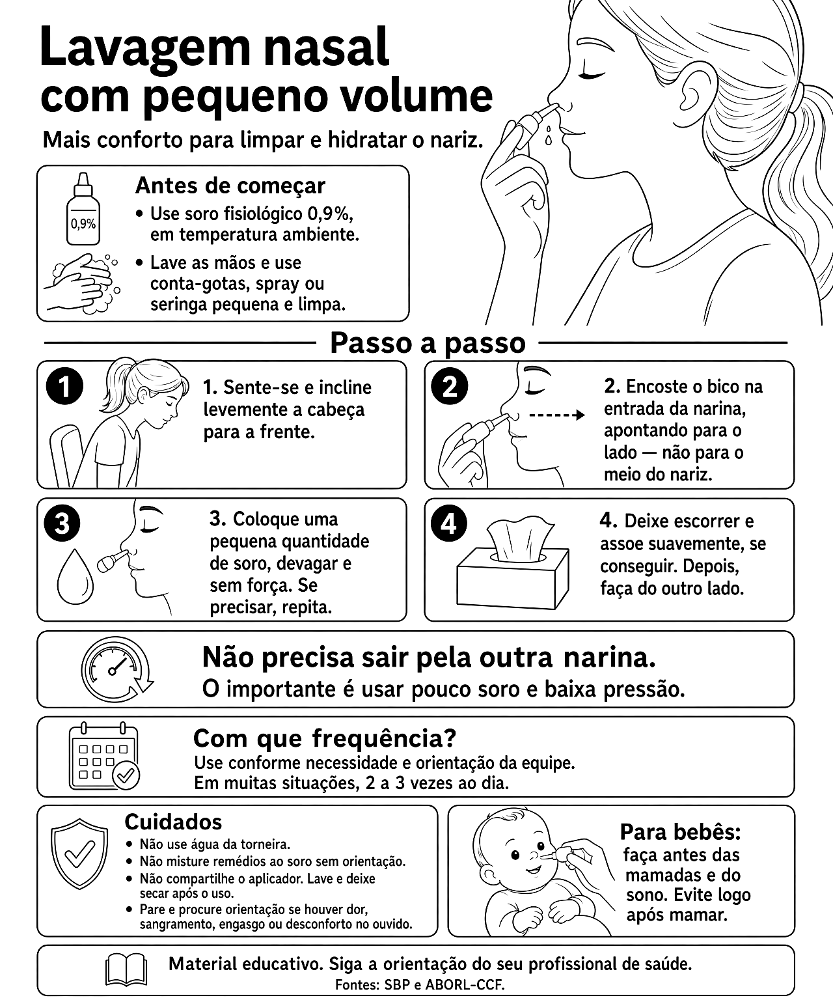

Lavagem nasal com pequeno volume

Ler o texto do infográfico
Antes de começar
- Use soro fisiológico 0,9%, em temperatura ambiente.
- Lave as mãos e use conta-gotas, spray ou seringa pequena e limpa.
Passo a passo
- Sente-se e incline levemente a cabeça para a frente.
- Encoste o bico na entrada da narina, apontando para o lado — não para o meio do nariz.
- Coloque uma pequena quantidade de soro, devagar e sem força. Se precisar, repita.
- Deixe escorrer e assoe suavemente, se conseguir. Depois, faça do outro lado.
Não precisa sair pela outra narina. O importante é usar pouco soro e baixa pressão.
Com que frequência?
Use conforme necessidade e orientação da equipe. Em muitas situações, 2 a 3 vezes ao dia.
Cuidados
- Não use água da torneira.
- Não misture remédios ao soro sem orientação.
- Não compartilhe o aplicador. Lave e deixe secar após o uso.
- Pare e procure orientação se houver dor, sangramento, engasgo ou desconforto no ouvido.
Para bebês
Faça antes das mamadas e do sono. Evite logo após mamar.
Material educativo. Siga a orientação do seu profissional de saúde. Fontes: SBP e ABORL-CCF.